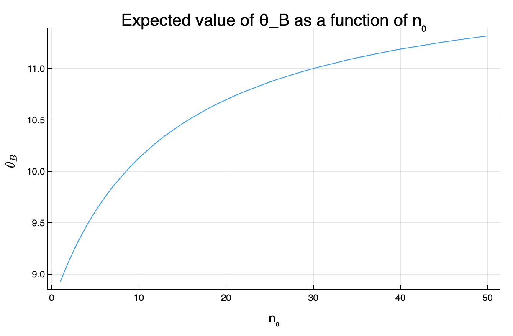
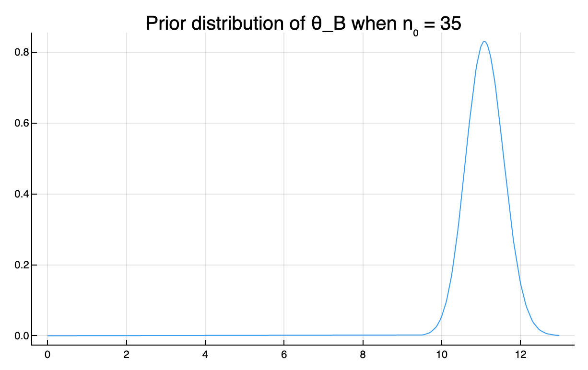

Exercise 3.3 Solution - Hoff, A First Course in Bayesian Statistical Methods
標準ベイズ統計学 演習問題 3.3 解答例
Answer
a)
answer
using Distributions y_A = [12, 9, 12, 14, 13, 13, 15, 8, 15, 6] y_B = [11, 11, 10, 9, 9, 8, 7, 10, 6, 8, 8, 9, 7] n_A, sy_A = length(y_A) , sum(y_A) n_B, sy_B = length(y_B) , sum(y_B) a₀_A = 120 b₀_A = 10 a₀_B = 12 b₀_B = 1 # Posterior distributions dist_A = Gamma(a₀_A + sy_A, 1/(b₀_A + n_A)) dist_B = Gamma(a₀_B + sy_B, 1/(b₀_B + n_B))
mean_A = (a₀_A + sy_A) / (b₀_A + n_A) mean_B = (a₀_B + sy_B) / (b₀_B + n_B) ["Posterior mean of A: $mean_A" , "Posterior mean of B: $mean_B"]
| Posterior mean of A: 11.85 |
| Posterior mean of B: 8.928571428571429 |
var_A = (a₀_A + sy_A) / (b₀_A + n_A)^2 var_B = (a₀_B + sy_B) / (b₀_B + n_B)^2 ["Posterior variance of A: $var_A" , "Posterior variance of B: $var_B"]
| Posterior variance of A: 0.5925 |
| Posterior variance of B: 0.6377551020408163 |
# 95% quantile-based confidence intervals quantile_A = quantile.(dist_A, [0.025, 0.975]) quantile_B = quantile.(dist_B, [0.025, 0.975]) ["Posterior 95% quantile of A: $quantile_A" , "Posterior 95% quantile of B: $quantile_B"]
| Posterior 95% quantile of A: [10.389238190941795, 13.405448325642006] |
| Posterior 95% quantile of B: [7.432064219464302, 10.560308149242365] |
b
answer
list_n₀ = 1:50 exp_θ_B = n -> (a₀_B*n + sy_B) / (n + n_B ) # Plot plot( list_n₀, exp_θ_B.(list_n₀), label="Expected value of θ_B", xlabel="n₀", ylabel=L"\theta_B", legend=nothing, title="Expected value of θ_B as a function of n₀" )

\(n_0 = 35\)くらいで、\(\theta_B\)の期待値が\(\theta_A\)の期待値を上回る。この時の\(\theta_B\)の事前分布のプロットは以下の通り。
(The expected value of \(\theta_B\) exceeds that of \(\theta_A\) when \(n_0 = 35\). The plot of the prior distribution of \(\theta_B\) at this time is as follows.)
n = 35 plot( Gamma(a₀_B*n + sy_B, 1/(n + n_B)) , label=L"Prior distribution of \theta_B when n_0 = $n" , legend=false )

上の分布を見ればわかるように、 \(\theta_B\)の事後期待値が\(\theta_A\)の事後期待値と同じくらいになるためには、 \(\theta_B\)がかなりの確率で 11 の近くに分布しているという信念を反映した事前分布が必要。
(As can be seen from the distribution above, in order for the posterior expectation of \(\theta_B\) to be similar to that of \(\theta_A\), a prior distribution reflecting the belief that \(\theta_B\) is distributed close to 11 with a high probability is required.)
c
answer
日本語
B 系統のマウスは A 系統のマウスと関連性があるとされているので、 A 系統のマウスについての腫瘍数の情報は B 系統のマウスについての腫瘍数の事前情報になり得る。よって、\(p(\theta_A, \theta_B) = p(\theta_A) \times p(\theta_B)\)という仮定は妥当ではなく、 B 系統のマウスと A 系統のマウスの関連の度合いに関する信念のパラメータ\(n_0\)を導入し、 \(p(\theta_B | \theta_A, n_0) = \text{gamma}(E[\theta_A] \times n_0, n_0)\) などという形でモデル化するのが妥当であると考えられる。また、A系統のマウスに関するデータが観測されたあとに B 系統のマウスに関する推測を行う場合には、 \(\theta_B\)の事前期待値に\(\theta_A\)の事後期待値を用いるようなモデリングも可能。
English
The B strain of mice is said to be related to the A strain of mice, so information about the number of tumors in A strain mice can serve as prior information about the number of tumors in B strain mice. Therefore, the assumption \(p(\theta_A, \theta_B) = p(\theta_A) \times p(\theta_B)\) is not valid, and it is reasonable to introduce a parameter \(n_0\) that represents the degree of correlation between the B strain mice and the A strain mice, and model it in the form of \(p(\theta_B | \theta_A, n_0) = \text{gamma}(E[\theta_A] \times n_0, n_0)\). Also, when making inferences about the B strain mice after observing data about the A strain mice, it is possible to model it using the posterior expectation of \(\theta_A\) as the prior expectation of \(\theta_B\).